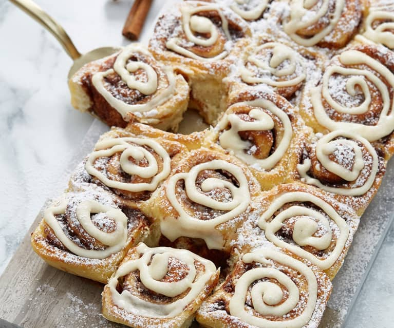

cinnamon roll

Description
Cinnamon rolls are a beloved sweet pastry known for their soft, fluffy texture and rich, gooey cinnamon-sugar filling. Originating from Europe, they've become a popular treat around the world, especially in North America. Typically enjoyed as a breakfast item or dessert, cinnamon rolls are made from a yeasted dough that's rolled out, spread with a buttery cinnamon-sugar mixture, then rolled up and sliced into individual portions before being baked. The final touch is often a drizzle or thick layer of sweet icing or glaze, adding an extra layer of sweetness to this already indulgent treat.
The Recipe
Dough
- 1 cup (240ml) warm milk (about 110°F or 45°C)
- 2 and 1/4 teaspoons active dry yeast (1 packet)
- 1/2 cup (100g) granulated sugar
- 1/2 cup (113g) unsalted butter, melted
- 2 large eggs
- 4 cups (500g) all-purpose flour, more for dusting
- 1 teaspoon salt
Filling
- 1 cup (200g) brown sugar, packed
- 2 and 1/2 tablespoons ground cinnamon
- 1/2 cup (113g) unsalted butter, softened
Frosting
- 1 cup powdered sugar
- 2 ounces cream cheese, softened
- 1/4 cup unsalted butter, softened
- 1/2 teaspoon vanilla extract
- 1 to 2 tablespoons milk
Instructions
- Prepare the Dough:
- In a large bowl, dissolve the yeast in warm milk. Add sugar, butter, salt, eggs, and flour; mix well. Knead the dough into a large ball, using your hands dusted lightly with flour. Put it in a bowl, cover, and let rise in a warm place until doubled in size, about 1 hour.
- Make the Filling:
- Mix brown sugar and cinnamon together in a bowl.
- Assemble the Rolls:
- After the dough has doubled in size, turn it out onto a lightly floured surface and roll the dough into a 16x21-inch rectangle. Spread the dough with 1/3 cup butter and sprinkle evenly with the sugar/cinnamon mixture.
- Starting with the longer side, roll the dough tightly and cut into 12 rolls. Place rolls in a lightly greased 9x13 inch baking pan. Cover and let rise until nearly doubled, about 30 minutes.
- Bake:
- Preheat oven to 400°F (200°C). Bake cinnamon rolls in the preheated oven until golden brown, about 15 minutes.
- Prepare the Frosting:
- While rolls are baking, beat together cream cheese, butter, powdered sugar, vanilla extract, and enough milk to achieve a drizzle-able consistency.
- Final Touch:
- Once rolls are finished baking, spread frosting on warm rolls before serving.